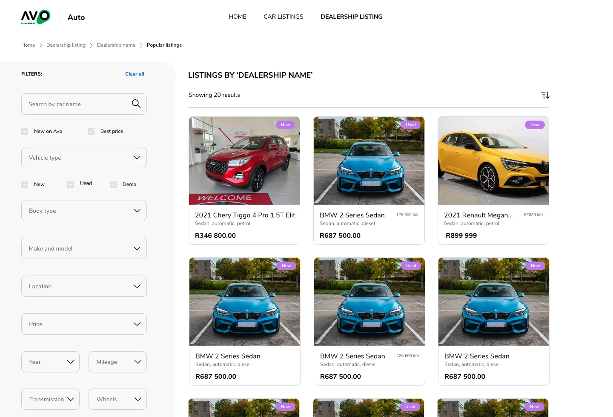
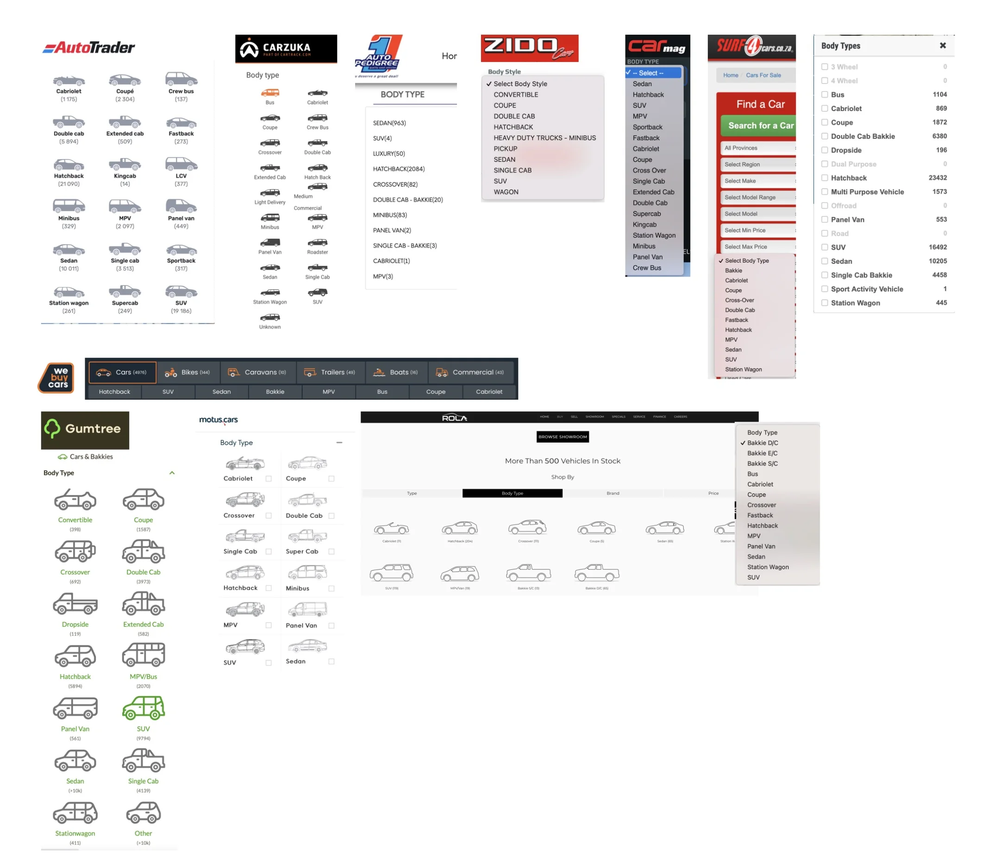
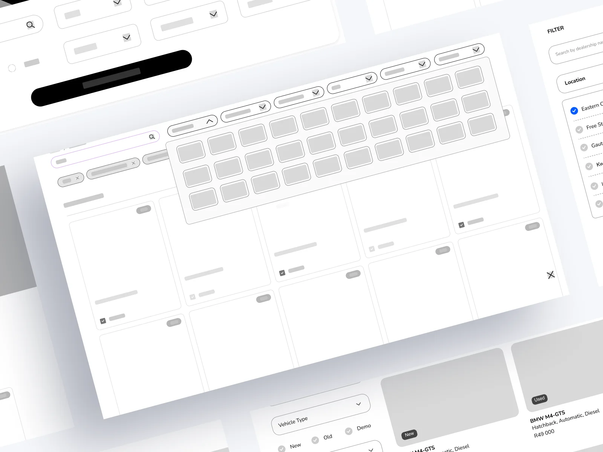
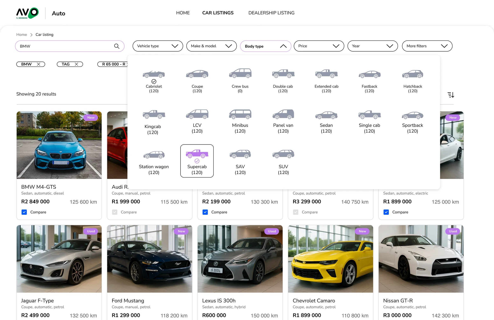
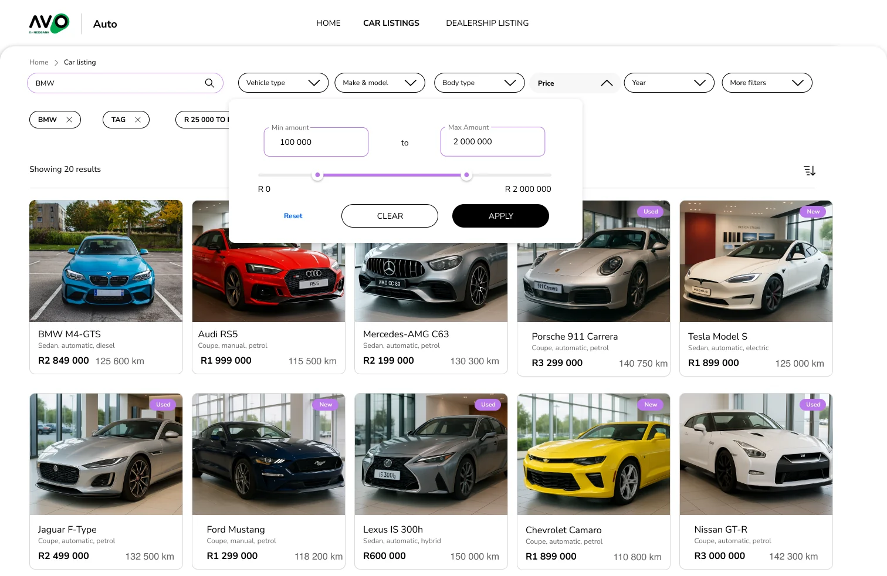
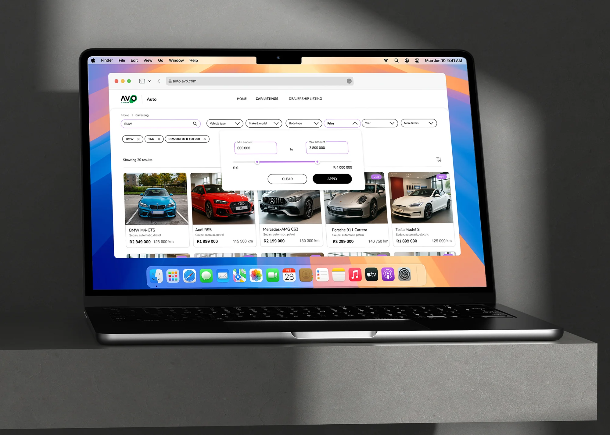

Overview
On Avo Auto, every filter sat in one long vertical column. I replaced it with a row of filter chips across the top of the results, built around the five filters buyers actually used. Applied filters show as chips you can remove with one tap, and the less common filters moved behind “More filters”. This is part of the Avo Auto search redesign.
The column gave every filter the same weight
The old pattern stacked search, checkboxes and dropdowns one under another. Make, model and variant lists were long on their own, and inside a long column they made the page feel endless, especially on a phone. A buyer who only wanted a price range had to scroll past filters they’d never touch.

The vertical filter pattern: a search box, checkboxes and nine dropdowns in one column, all with the same weight.
Five filters did most of the work
Most people only used make and model, body type, price, year and mileage. The rest came out later, to narrow a shortlist. Competitor sites showed the same habit from the other side: most listed 15 to 20 body types as plain text, and the few that used icons with counts were much quicker to scan.

Body type on eleven South African car sites. Most list 15 to 20 options, about half as plain text or a dropdown.
One row, one panel at a time
In wireframes I moved the filters into a row of chips above the results. Tapping a chip opens a small panel over the listings for just that filter, so you stay on the results page the whole time.

Wireframe: the chip row with a body-type panel open over the results.
Each panel is shaped for its data. Body type is a grid of car icons with a count under each, so you can see where the stock is before you pick. Price gets two fields and a slider, because some people type a number and some drag. Both panels have Clear and Apply, so nothing jumps around while you’re still deciding.


Left: body type as icons with counts; selected types get a tick and an outline. Right: price as min and max fields with a range slider, then Clear and Apply.
What I gave up
Most filters are no longer visible on the page. I made that call on purpose. The research said people reach for the extra filters after shortlisting, so showing them up front slowed down the common search to help a rare one. “More filters” keeps them one tap away.
We went through several rounds on chip alignment and slider behaviour to get the row working on both mobile and desktop.
Where it landed
Applied filters now sit under the search bar as chips (a make, a tag, a price range), so you can read your whole search in one line and undo any part of it. The pattern became the standard for search across Avo Auto.

The finished listings page on desktop, with the price panel open and three applied filters as chips.